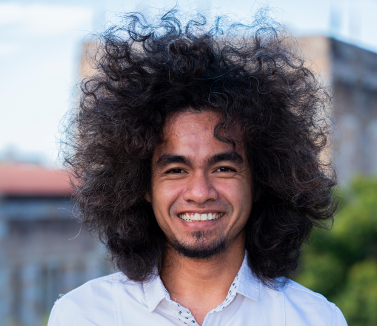

This work rests on a supervisory team spanning two universities and field data shared by researchers and institutions across Indonesia.

Muhammad Hafizt is a PhD candidate at the School of the Environment, University of Queensland, and a researcher with Indonesia's National Research and Innovation Agency (BRIN). His PhD research develops satellite-based methods for estimating and monitoring seagrass carbon across Indonesia, the work behind every tool on this site.
View profile →Field data behind this research was shared by researchers, institutions, and partnerships across Indonesia and Australia.